Hi, I'm Vincent
I want to build products that will enhance the lives of others!
I am a Computer Science Major at the University of Waterloo.
My passion for computer science sparked when I learned my first programming language, scheme, during my first year of University. I am a hands on learner, and I enjoy meeting new people!
My Skills:
- HTML/CSS/PHP
- C++/C#/C
- Ruby
- Unity3D
- Android SDK
My main interests include:
- - Android development
- - Web development
- - Game Development
Aside from school and programming, I also enjoy playing volleyball, drawing/sketching, hanging out with friends, and also weight training.
Work Experience

Oracle Eloqua
Dev-Ops (co-op)
- Wrote Sensu scripts to monitor virtual machines
- Automated the retrieval of metrics to be graphed and displayed on Grafana
- Developed a webpage with PHP, HTML, and CSS to display VM statistics
- Side tasks: support tickets, hot fixes, and monitoring of systems
This was my first ever co-op term. My main roles included providing users with VM access, running mySQL queries, support tickets, and also hot fixes. In my position, I was able to familiarize myself with Windows and Linux systems. Moreover, I was able to learn about agile development and the importance of stories. Aside from my main roles, I was also assigned side projects.
Projects:
- Grafana (I have removed values and database names for privacy)
- TeamCity Build Times
- VM Statistics
- Web Development
I have utilized Grafana to create dashboards to display time-series metrics.
I have automated a process to retrieve data from TeamCity to be placed in the database influxDB, to generate a dashboard to display the total build times.
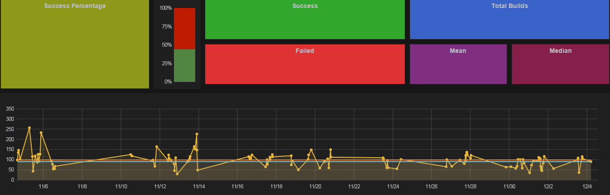I have wrote Ruby scripts for Sensu monitoring system, to populate a Graphite database, with data pertaining to the VMs cpu usage, disk space, and also RAM usage.
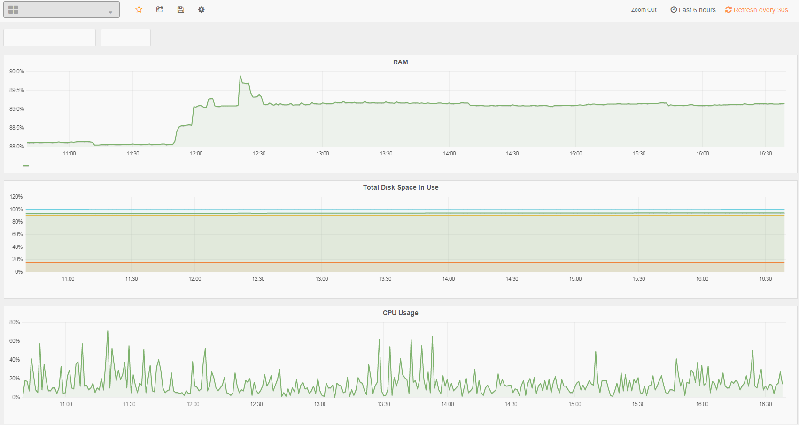I have created a webpage with HTML, PHP, and CSS to display information pertaining to VMs.
All in all, I feel that I have learned a lot in this co-op term. Aside from technical skills, I feel that my attention to details has improved tremendously as my position was really dependent on it.
Side Projects
Global Game Jam Winter 2015
Hackathon
- Designed parts of the UI, map, animations, and graphics of the game
- Won the award for the Best Story-Line
At this event, I was still fairly new to programming. I was afraid that I wasn't going to be of any help to my team members. However, I was wrong. I was able to contribute as the artist and level design of the team. This event was a huge learning curve for myself. I learned the basics of Unity, how games go from alpha phase to completion within a short 48 hour time frame, and most importanlty how to communicate with a team to get work done.
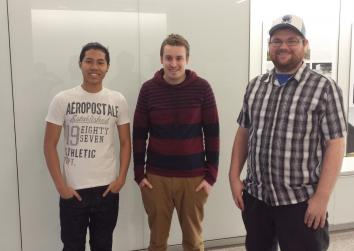 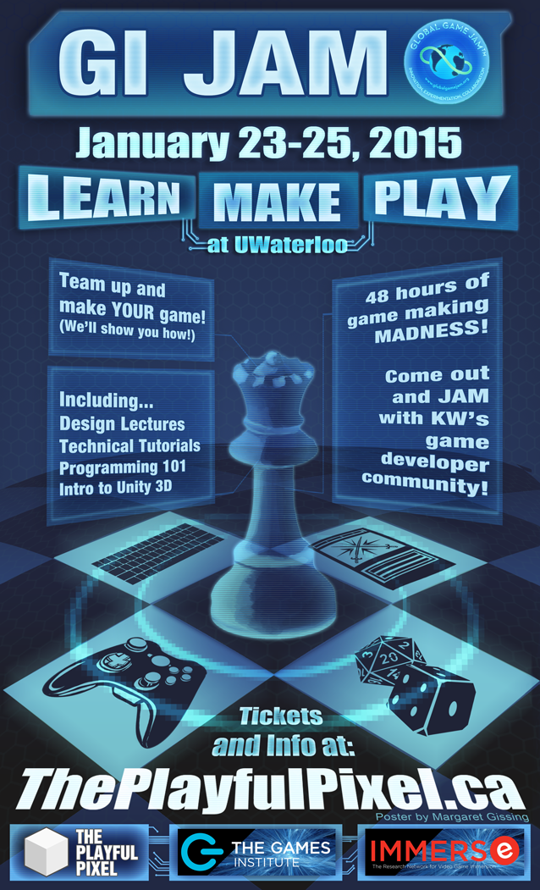 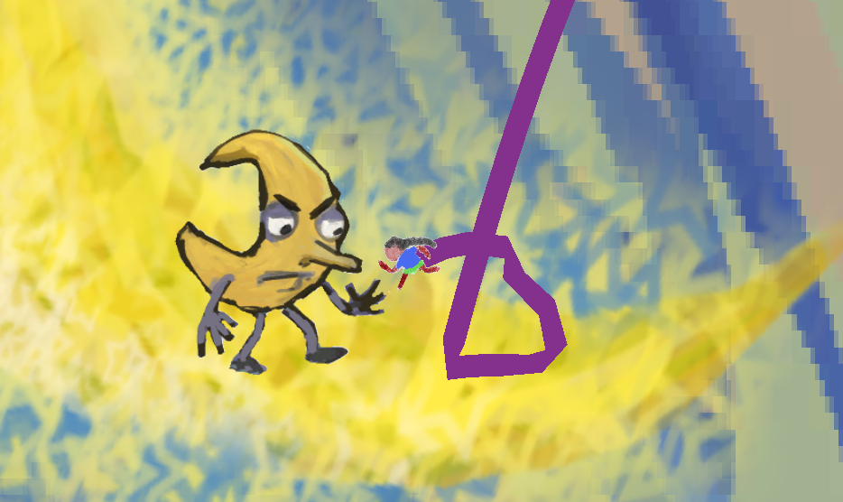Team from left to right: Vincent Vuong, Kyle Schieck, Johnathon Barker
24 Hour Start Up
Hackathon
- Worked together with 5 others to develop an application that generates real time analytics to help city planners manage their resources more efficiently
- Won the award for the Best Use of the City of Kitchener’s Open Data
In my first term of University, my professor has suggested that we should attend this Hackathon. I did not know what a Hackathon was at the time, and so I attended. The atmosphere was very different compared to a classroom. Everyone is very friendly, and they all have a similar goal, which was to win. The focus of this event was to build a product with the city of Kitchener's open city data. I have joined a team, with the goal of gamifying the data to generate real time analytics that could be used by city planners to better allocate the city's resources. As I was fairly new to programming, I mainly focused on learning, creating waterframes, and also designing the product. The product we created was "Citivate", where data is generated when users use city resources. The data is then used to create real-time analytics. It was a great learning experience and I feel that I have learned a lot. In the end, we did not win 1st,2nd, or 3rd place. However, we did win a prize for being the team that had created a product that has the best use of the open city data!
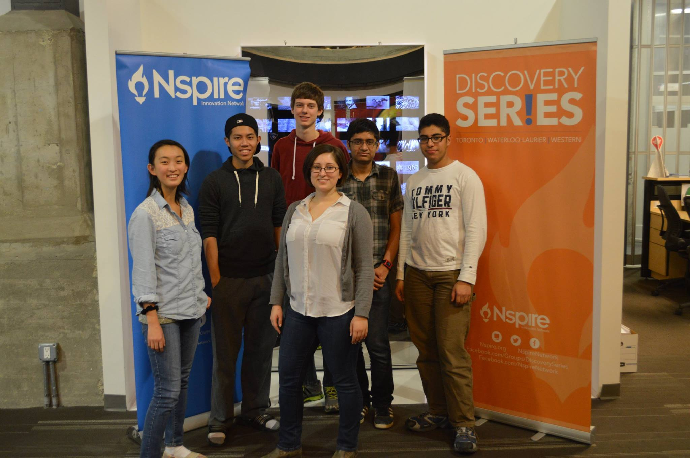 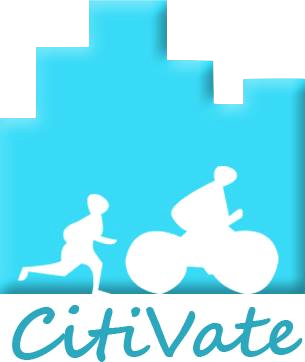 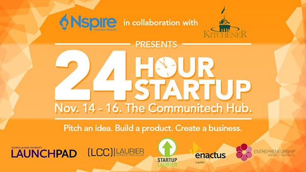 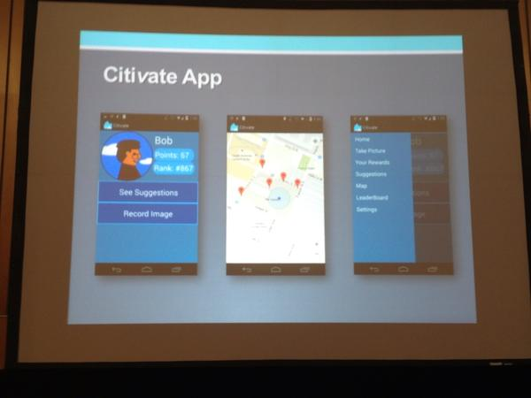 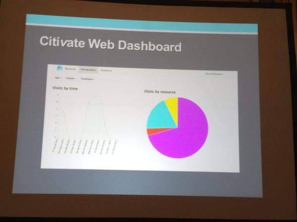
Team from left to right: Joanna, Vincent, Nikolas, Krysta, Bilal, Mohammad
2D Platformer Game
Game Development
- Scripted a 2D platformer game in Unity3D with C#
After being exposed to Unity3D in the Global Game Jam 2015, I wanted to explore game development. I really enjoy playing 2D platformer games, and I especially love pixel art. A popular MMORPG that I used to play in the past was Maplestory. I wanted to replicate the game as much as possible with the Unity physics engine. Although, some aspects of the game does not feel the same as the original. I feel that it is still an enjoyable replica of the original. This project has taught me the basics of OOP, and also the Unity Engine.
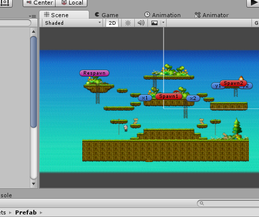Chamber Crawler
Game Development
- Worked with a partner, Shadwell, to create a chamber crawler game in C++
In my 2A summer term at the University of Waterloo, I have taken CS246. In this course, I have learned C++ and OOP. For the final project of this course, we were required to work in pairs to develop a C++ game. The game choices that we had to choose from were chess, monoploy, or a chamber crawler game.
As I am a huge fan of Chamber Crawlers, me and my partner, Shadwell, chose to work on the Chamber Crawler game. Although we were faced with many different challenges, specificaly scheduling, memmory errors, and also different coding styles, we were able to overcome them and complete the project. All in all, this project has taught me many key computer science concepts. Specifically polymorphism, classes, objects, and also team work.
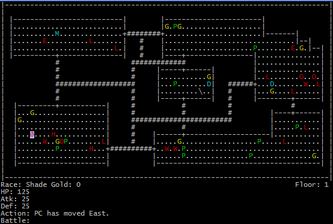Calculator App
Android Development
- First android application developed in Android SDK with Java
I have always wanted to learn android development. I wanted to do something simple to learn the basics of Android SDK, and also some java. In this project, I was able to replicate a basic calculator that does basic arithmetic operations. (+,-,*,/,%)
Dots
Game Development
- Clone of a popular game: Two Dots
During my first co-op term at Oracle Eloqua, I had to take a 1 hour commute everyday. To kill my boredom, I tend to play games on my phone. The game Two Dots, on the play store, was a very enjoyable puzzle game. I really liked the logic behind the game, and I wanted to try to replicate. Hence, the start of this project. I have developed the game in Unity3D and I have added touch features to be playable on my android device. To create this game I have used linked-lists to store the selected dots, and also the line renderer in Unity to dynamically connect the dots.